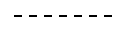
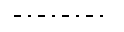
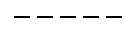
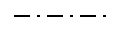
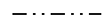
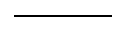

StrokeOptions
Shape stroke configuration options.
Fields
color String
The stroke color in any of the following formats.
| Value | Description |
|---|---|
| red | Basic or Extended CSS Color name |
| #ff0000 | Hex RGB value |
| rgb(255, 0, 0) | RGB value |
Specifying 'none', 'transparent' or '' (empty string) will clear the stroke.
dashType String (default: "solid")
The stroke dash type.
| Value | Description | |
|---|---|---|
dash |
 | a line consisting of dashes |
dashDot |
 | a line consisting of a repeating pattern of dash-dot |
dot |
a line consisting of dots | |
longDash |
 | a line consisting of a repeating pattern of long-dash |
longDashDot |
 | a line consisting of a repeating pattern of long-dash dot |
longDashDotDot |
 | a line consisting of a repeating pattern of long-dash dot-dot |
solid |
 | a solid line |
lineCap String (default: "butt")
The stroke line cap style.
| Value | Description | |
|---|---|---|
butt |
a flat edge with no cap | |
round |
a rounded cap | |
square |
a square cap |
lineJoin String (default: "miter")
The stroke line join style.
| Value | Description | |
|---|---|---|
bevel |
a beveled join | |
miter |
a square join | |
round |
a rounded join |
opacity Number
The stroke opacity. Ranges from 0 (completely transparent) to 1 (completely opaque).
width Number
The stroke width in pixels.